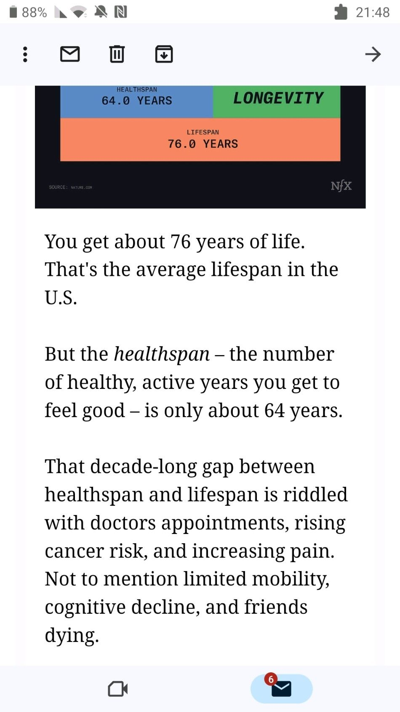

you only got 64 years to be fully functional and healthy. what did you do today to promote the feeling that you're spending them t
Originally published on LinkedIn
you only got 64 years to be fully functional and healthy. what did you do today to promote the feeling that you're spending them the best way you can?
